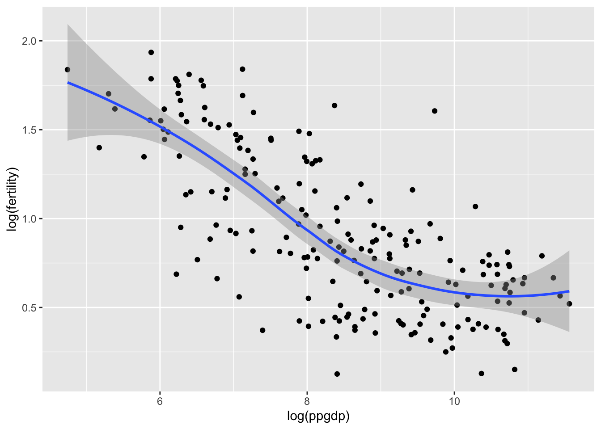
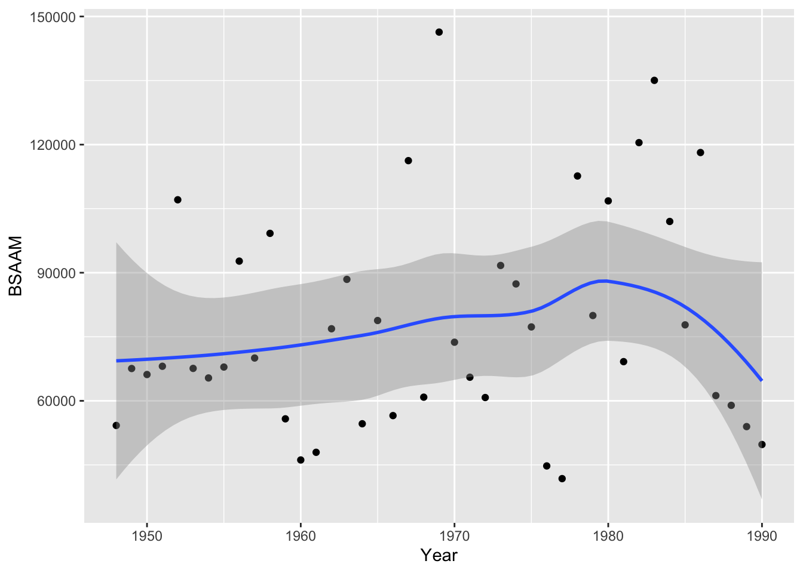

region group fertility ppgdp lifeExpF pctUrban
Afghanistan Asia other 5.968 499.0 49.49 23
Albania Europe other 1.525 3677.2 80.40 53
Algeria Africa africa 2.142 4473.0 75.00 67
Angola Africa africa 5.135 4321.9 53.17 59
Anguilla Caribbean other 2.000 13750.1 81.10 100
Argentina Latin Amer other 2.172 9162.1 79.89 93
Question 1:
Graph ppgdp with fertility and transform the data
a) the predictor variable is the independent variable, this is per person gross national product (ppgdp). And the response is the dependent variable, this is fertility.
b) The scatterplot above shows the level of fertility based on per person gdp across different countries. What we can see is that as the gdp person increases, the level of fertility decreases, until it reaches a specific point, and then it stays pretty level.
Code
ggplot(data = UN11, aes(x =log(ppgdp), y =log(fertility))) +geom_point() +geom_smooth()
`geom_smooth()` using method = 'loess' and formula = 'y ~ x'

c) Now that we have transformed this data into a logarithm, a simple linear regression does seem plausible to summarize the graph.
Question 2:
a) When the independent variable is increased by 1.33, the slope of the prediction will increase by 1.33.
b) When the independent variable is increased by 1.33, the correlation will not change. The correlation is the standardized version of the slope and does not depend on unit of measurement.
Question 3:
Can Southern California’s water supply in future years be predicted from past data?
`geom_smooth()` using method = 'loess' and formula = 'y ~ x'

Due to the shape of this relationship, it is best to transform the data.
Code
pairs(water)
What we see in the scatterplot matrix above is a relationship between locations, but not necesarily location and year (looking at the top row of scatterplots). Therefore further analysis is necessary in order to attempt a prediction of water runoff.
From the scatterplot matrix above we can see that there is a positivie relationship between professor rating and quality of professor, helpfulness of professor, and their clarity. However the professor rating is not related to the easiness of their class or the rater interest in the material.
Question 5:
Regression Analysis
Code
data("student.survey")head(student.survey)
subj ge ag hi co dh dr tv sp ne ah ve pa pi re
1 1 m 32 2.2 3.5 0 5.0 3 5 0 0 FALSE r conservative most weeks
2 2 f 23 2.1 3.5 1200 0.3 15 7 5 6 FALSE d liberal occasionally
3 3 f 27 3.3 3.0 1300 1.5 0 4 3 0 FALSE d liberal most weeks
4 4 f 35 3.5 3.2 1500 8.0 5 5 6 3 FALSE i moderate occasionally
5 5 m 23 3.1 3.5 1600 10.0 6 6 3 0 FALSE i very liberal never
6 6 m 39 3.5 3.5 350 3.0 4 5 7 0 FALSE d liberal occasionally
ab aa ld
1 FALSE FALSE FALSE
2 FALSE FALSE NA
3 FALSE FALSE NA
4 FALSE FALSE FALSE
5 FALSE FALSE FALSE
6 FALSE FALSE NA
Code
#regression analysis istudent_survey_reg_i<-lm(as.numeric(pi) ~as.numeric(re), data = student.survey)summary(student_survey_reg_i)
Call:
lm(formula = as.numeric(pi) ~ as.numeric(re), data = student.survey)
Residuals:
Min 1Q Median 3Q Max
-2.81243 -0.87160 0.09882 1.12840 3.09882
Coefficients:
Estimate Std. Error t value Pr(>|t|)
(Intercept) 0.9308 0.4252 2.189 0.0327 *
as.numeric(re) 0.9704 0.1792 5.416 1.22e-06 ***
---
Signif. codes: 0 '***' 0.001 '**' 0.01 '*' 0.05 '.' 0.1 ' ' 1
Residual standard error: 1.345 on 58 degrees of freedom
Multiple R-squared: 0.3359, Adjusted R-squared: 0.3244
F-statistic: 29.34 on 1 and 58 DF, p-value: 1.221e-06
Code
ggplot(student.survey, aes(re, fill = pi)) +geom_bar(position ="fill")
Above we can see the relationship between religiosity and political ideology. We see that the students who attend church more regularly also identify more as conservatives than liberals. According to the regression analysis, the relationship between political ideology and religiosity is significant with a p value very close to 0. From this we can see that as religiosity increases, political ideology leans conservative.
Code
#regression analysis (ii)student_survey_reg_ii <-lm(hi ~ tv, data = student.survey)summary(student_survey_reg_ii)
Call:
lm(formula = hi ~ tv, data = student.survey)
Residuals:
Min 1Q Median 3Q Max
-1.2583 -0.2456 0.0417 0.3368 0.7051
Coefficients:
Estimate Std. Error t value Pr(>|t|)
(Intercept) 3.441353 0.085345 40.323 <2e-16 ***
tv -0.018305 0.008658 -2.114 0.0388 *
---
Signif. codes: 0 '***' 0.001 '**' 0.01 '*' 0.05 '.' 0.1 ' ' 1
Residual standard error: 0.4467 on 58 degrees of freedom
Multiple R-squared: 0.07156, Adjusted R-squared: 0.05555
F-statistic: 4.471 on 1 and 58 DF, p-value: 0.03879
Above we can see the relationship between average rate of tv watching per week and high school GPA. We see that the students who watch more TV on average have a lower GPS. According to the regression analysis, the relationship between average hours of tv watched per week and high school GPS is significant with a p value very close to 0.01. The adjusted R squared is quite low and the p value is not at a strong significance level. We can see that the relationship in the regression analysis above is stronger.
Source Code
---title: "Homework 3"author: "Meredith Derian-Toth"description: "DACSS603_Homework 2"date: "04/02/2023"format: html: toc: true code-fold: true code-copy: true code-tools: truecategories: - hw2 - confidence intervals ---library("alr4")library("smss")```{r}library("alr4")library("smss")library("ggplot2")data(UN11)head(UN11)```### Question 1:*Graph ppgdp with fertility and transform the data*a\) the predictor variable is the independent variable, this is per person gross national product (ppgdp). And the response is the dependent variable, this is fertility.```{r}ggplot(data = UN11, aes(x = ppgdp, y = fertility)) +geom_point() +geom_smooth(method ='lm', se=F)```b\) The scatterplot above shows the level of fertility based on per person gdp across different countries. What we can see is that as the gdp person increases, the level of fertility decreases, until it reaches a specific point, and then it stays pretty level.```{r}ggplot(data = UN11, aes(x =log(ppgdp), y =log(fertility))) +geom_point() +geom_smooth()```c\) Now that we have transformed this data into a logarithm, a simple linear regression does seem plausible to summarize the graph.### Question 2:a\) When the independent variable is increased by 1.33, the slope of the prediction will increase by 1.33.b\) When the independent variable is increased by 1.33, the correlation will not change. The correlation is the standardized version of the slope and does not depend on unit of measurement.### Question 3:*Can Southern California's water supply in future years be predicted from past data?*```{r}data(water)head(water)ggplot(data = water, aes(x = Year, y = BSAAM)) +geom_point() +geom_smooth()```Due to the shape of this relationship, it is best to transform the data.```{r}pairs(water)```What we see in the scatterplot matrix above is a relationship between locations, but not necesarily location and year (looking at the top row of scatterplots). Therefore further analysis is necessary in order to attempt a prediction of water runoff.### Question 4:Professor Ratings Overtime```{r}data("Rateprof")pairs(~ quality + helpfulness + clarity + easiness + raterInterest, data=Rateprof)```From the scatterplot matrix above we can see that there is a positivie relationship between professor rating and quality of professor, helpfulness of professor, and their clarity. However the professor rating is not related to the easiness of their class or the rater interest in the material.### Question 5:### Regression Analysis```{r}data("student.survey")head(student.survey)#regression analysis istudent_survey_reg_i<-lm(as.numeric(pi) ~as.numeric(re), data = student.survey)summary(student_survey_reg_i)ggplot(student.survey, aes(re, fill = pi)) +geom_bar(position ="fill")```Above we can see the relationship between religiosity and political ideology. We see that the students who attend church more regularly also identify more as conservatives than liberals. According to the regression analysis, the relationship between political ideology and religiosity is significant with a p value very close to 0. From this we can see that as religiosity increases, political ideology leans conservative.```{r}#regression analysis (ii)student_survey_reg_ii <-lm(hi ~ tv, data = student.survey)summary(student_survey_reg_ii)ggplot(data = student.survey, aes(x = tv, y = hi)) +geom_point() +geom_smooth(method ='lm', se=F)```Above we can see the relationship between average rate of tv watching per week and high school GPA. We see that the students who watch more TV on average have a lower GPS. According to the regression analysis, the relationship between average hours of tv watched per week and high school GPS is significant with a p value very close to 0.01. The adjusted R squared is quite low and the p value is not at a strong significance level. We can see that the relationship in the regression analysis above is stronger.